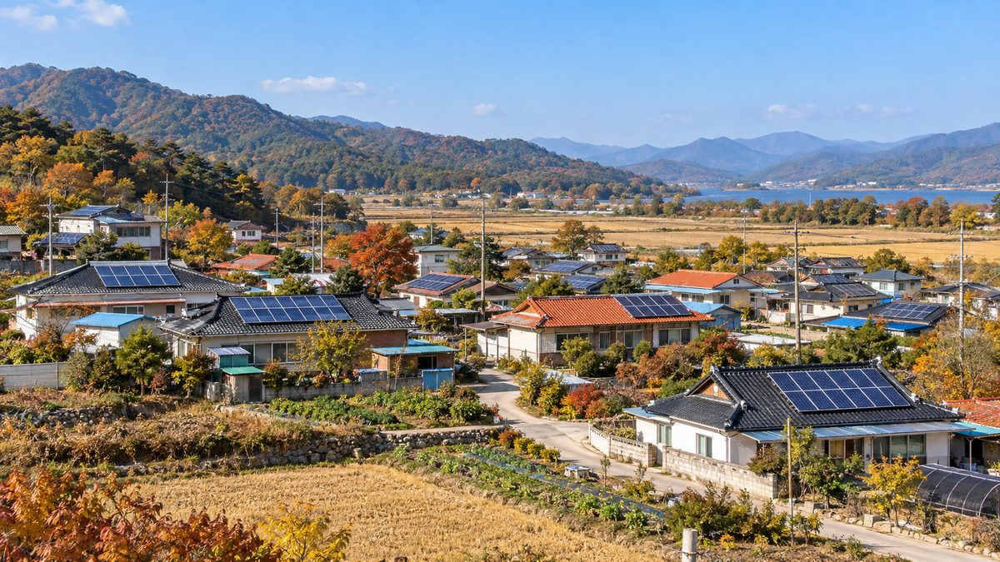

허은녕 서울대 교수, 사업자 중심 태양광 보급은 한계…주택 자가소비·마을 자립으로 옮겨야

차기 한국신·재생에너지학회장, 가정용 직접 보급보조 부활과 기초지자체 에너지 자치권 확대 제안…RPS는 내년 계약시장으로 개편
허은녕 서울대 에너지시스템공학부 교수가 사업자 위주로 짜인 재생에너지 보급이 한계에 이르렀다며 개별 주택의 자가소비와 마을 단위 자립 모델로 보급의 중심을 옮겨야 한다고 주장했다. 내년부터 2년간 한국신·재생에너지학회를 이끌 허 교수는 올해 처음 법정기념일이 된 재생에너지의 날(10월 23일)을 앞둔 인터뷰에서, 사업자가 들어갈 만한 넓은 땅과 산·바다는 이미 포화 상태이고 수익을 사업자만 가져가 설비가 들어서는 지역 주민에게는 반발만 남았다고 진단했다. 그는 사업자용 시장은 경쟁입찰로 가격 거품을 빼되 과거의 직접 보급보조를 되살려 가정용 태양광을 넓히고, 농어촌은 전기와 열을 재생에너지로 공급해 요금 부담을 없앤 뒤 남는 전력을 팔아 마을 공동 소득으로 돌리자고 제안했다. 소규모 단위에 묶인 전력 자치 제도를 기초지자체 단위로 넓혀 지방이 지역 전력망을 스스로 건설·운영할 권한을 줘야 한다는 주문도 내놨다. 2012년부터 이어진 공급의무화제도(RPS)는 내년부터 정부가 정한 상한가 안에서 입찰해 20년 안팎의 장기고정가격 계약을 맺는 계약시장으로 바뀌며, 허 교수는 정부가 소규모 사업자용 계약시장을 따로 열고 맞춤형 지원을 주는 실무안을 마련 중인 것으로 안다고 밝혔다. 국내 재생에너지 발전 비중은 11%이고 정부 목표는 2030년까지 100GW다.
시민에너지 관점
발전 비중 11%에서 100GW 목표로 가는 길에 남은 땅을 외부 사업자가 차지하는 방식으로는 주민 반발을 넘기 어렵다는 진단은 현장의 경험과 맞닿아 있다. 집집마다 지붕에 패널을 올리는 방식만으로는 세입자나 형편이 어려운 가구가 빠질 수 있다는 우려도 나올 수 있지만, 시민 2,800명이 풍력기 한 기를 함께 소유한 덴마크 튀보뢴처럼 마을과 시민이 함께 출자하는 공동 발전소가 그 빈자리를 채울 수 있다. 주민이 수익을 나눠 받는 데서 그치지 않고 발전소의 주인이 될 때 반대는 참여로 바뀌고, 재생에너지는 지역에 남는 자산이 된다. 계약시장 실무안을 짜는 지금 소규모 사업자 몫과 함께 주민·협동조합 공동소유 물량과 평가 기준부터 따로 정해 두어야 한다.
출처: 한국경제 2026-10-22 김리안 원문 보기
ソウル大のホ・ウンニョン教授、事業者中心の太陽光普及は限界…住宅の自家消費と村の自立へ移行を
次期韓国新・再生エネルギー学会長、家庭向け直接普及補助の復活と基礎自治体のエネルギー自治権拡大を提案…RPSは来年から契約市場に再編
ソウル大学エネルギーシステム工学部のホ・ウンニョン教授は、事業者中心に組み立てられた再生可能エネルギーの普及は限界に達したとして、個々の住宅の自家消費と村単位の自立モデルへ普及の軸を移すべきだと主張した。来年から2年間、韓国新・再生エネルギー学会を率いるホ教授は、今年初めて法定記念日となった「再生可能エネルギーの日」（10月23日）を前にしたインタビューで、事業者が入れるような広い土地や山・海はすでに飽和状態にあり、収益を事業者だけが得るため、設備が建つ地域の住民には反発だけが残ったと診断した。そのうえで、事業者向け市場は競争入札で価格の割高分を削る一方、かつての直接普及補助を復活させて家庭用太陽光を広げ、農漁村では電気と熱を再生可能エネルギーで賄って料金負担をなくし、余った電力を売って村の共同所得に回すべきだと提案した。小規模単位に限られている電力自治の制度を基礎自治体単位に広げ、地方が地域の電力網を自ら建設・運営できる権限を与えるべきだとも求めた。2012年から続く供給義務化制度（RPS）は来年から、政府が定めた上限価格の範囲で入札し20年前後の長期固定価格契約を結ぶ契約市場に変わり、ホ教授は、政府が小規模事業者向けの契約市場を別に設けて個別の支援を行う実務案を準備していると承知していると述べた。国内の再生可能エネルギーの発電比率は11%で、政府は2030年までに100GWを目標としている。
市民エネルギーの視点
発電比率11%から100GWの目標へ向かう中で、残る土地を外部の事業者が占める方式では住民の反発を乗り越えにくいという診断は、現場の経験と重なる。各家庭の屋根にパネルを載せる方式だけでは借家人や生活の苦しい世帯が取り残されるとの懸念もありうるが、市民2,800人が風車1基を共同で所有したデンマークのThyborønのように、村と市民が共に出資する共同発電所がその空白を埋められる。住民が収益の分配を受けるにとどまらず発電所の所有者になるとき、反対は参加に変わり、再生可能エネルギーは地域に残る資産になる。契約市場の実務案を詰める今こそ、小規模事業者の枠とあわせて、住民・協同組合による共同所有の枠と評価基準をまず別に定めておくべきだ。
出典: The Korea Economic Daily 2026-10-22 Kim Ri-an 原文を読む
首尔大学教授Heo Eun-nyeong：以开发商为中心的太阳能推广已到极限，应转向住宅自用和村庄自立
下任韩国新再生能源学会会长提议恢复家庭直接推广补贴、扩大基层地方政府能源自治权…RPS明年改为合同市场
首尔大学能源系统工程系教授Heo Eun-nyeong表示，以开发商为中心的可再生能源推广已经走到极限，应把推广重心转向单个住宅的自发自用和以村为单位的自立模式。明年起将担任两年韩国新再生能源学会会长的Heo教授，在今年首次成为法定纪念日的"可再生能源日"（10月23日）前接受采访时指出，适合开发商进入的大片土地、山地和海域已经饱和，而收益只归开发商，设施所在地居民只剩下反对情绪。他提议，面向开发商的市场通过竞争招标挤掉价格泡沫，同时恢复过去的直接推广补贴以扩大家用太阳能；农渔村则用可再生能源供应电力和热能，消除电费负担，再把多余电力出售，转为村庄共同收入。他还主张把目前只限于小规模单位的电力自治制度扩大到基层地方政府层面，赋予地方自主建设和运营地区电网的权限。自2012年实行的可再生能源配额制（RPS）将从明年起改为合同市场，即在政府规定的上限价格内投标，签订20年左右的长期固定价格合同；Heo教授表示，据他所知政府正在制定为小规模开发商单独开设合同市场并提供定制支持的实施方案。韩国可再生能源发电占比为11%，政府目标是到2030年达到100GW。
市民能源视角
从11%的发电占比走向100GW目标的过程中，如果剩下的土地仍由外部开发商占据，就很难化解居民的反对，这一判断与现场经验相符。有人可能担心，仅靠各家屋顶装板，租户和困难家庭会被排除在外；但正如丹麦Thyborøn有2,800名市民共同拥有一台风机那样，由村庄和市民共同出资的社区发电站可以填补这一空白。居民不只是分享收益，而是成为发电站的主人时，反对就会变成参与，可再生能源也会成为留在地方的资产。在制定合同市场实施方案的此刻，应在小规模开发商份额之外，先单独确定居民和合作社共同所有的份额及评审标准。
来源: The Korea Economic Daily 2026-10-22 Kim Ri-an 查看原文
Seoul National University's Heo Eun-nyeong says developer-led solar has hit its limit, urges shift to home self-consumption and village self-reliance
Incoming head of the Korean Society for New and Renewable Energy proposes reviving direct household subsidies and wider energy autonomy for local governments; RPS to become a contract market next year
Heo Eun-nyeong, a professor of energy systems engineering at Seoul National University, argued that renewable energy deployment built around developers has reached its limit and that the focus should shift to self-consumption by individual homes and village-level self-reliance models. In an interview ahead of Renewable Energy Day on October 23, which became a statutory day for the first time this year, Heo, who will lead the Korean Society for New and Renewable Energy for two years from next year, said the large plots of land, hills and sea areas suitable for developers are already saturated, and that because only developers take the profits, residents where facilities are built are left with nothing but resentment. He proposed squeezing price bubbles out of the developer market through competitive bidding while reviving past direct subsidies to expand household solar, and having farming and fishing villages meet electricity and heat needs with renewables to eliminate energy bills, then sell surplus power as shared village income. He also called for extending electricity self-governance, now limited to small units, to the level of basic local governments so they can build and run local grids themselves. The renewable portfolio standard (RPS) in place since 2012 will become a contract market next year, in which bidders compete under a government price cap for long-term fixed-price contracts of around 20 years, and Heo said he understands the government is drafting plans for a separate contract market and tailored support for small producers. Renewables account for 11% of Korea's power generation, and the government's target is 100GW by 2030.
Citizen Energy View
The diagnosis that resident opposition will be hard to overcome if outside developers take the remaining land on the road from an 11% share to a 100GW target matches experience on the ground. Some may worry that rooftop panels on individual homes alone would leave out tenants and struggling households, but as in Thyborøn, Denmark, where 2,800 citizens jointly owned a wind turbine, community power plants financed jointly by villages and citizens can fill that gap. When residents do more than receive a share of revenue and become owners of the plant, opposition turns into participation and renewable energy becomes an asset that stays in the community. Now, while the contract-market details are being drafted, a separate volume and evaluation criteria for resident and cooperative co-ownership should be set alongside the allocation for small producers.
Source: The Korea Economic Daily 2026-10-22 Kim Ri-an Read the original